Appendix B: Motivational Model Guide
Contents
Appendix B: Motivational Model Guide¶
Attention
An announcement will be posted in the Canvas LMS when the MMTool is available to access for your subject. No further registration is required.
Login to the MMTool using:
URL: provided during the semester.
Username: your University of Melbourne email address.
Password: your University of Melbourne password.
Important
If you face any issues while logging using the provided information, please email the teaching team and include the below details:
Student ID
First Name
Last Name
Email Address
Username
Description of the issue and if required include corresponding screenshots
Creating a Model¶
Once the project teams are finalised, teaching team will create a project including all the team members of your team in the MMTool. An announcement will be posted in the Canvas LMS.
All the members of a team should be able to view the project in your dashboard as shown in Figure 1.

Note
Project Name (Team Name) should not be renamed.
Creating a Model Under a Project¶
Click on ‘+’ under ‘Create Model’ in Figure 1 to create a new model.
Enter model name in the displayed ‘New Model’ window and click ‘Create’:

On clicking Create in the New Model window, user will be navigated to the Write Goal List tab of the Model.

To Rename the model:
Click on stack button corresponding to a model in project folder:
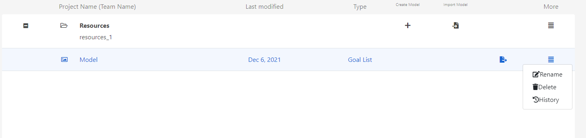
Enter the model’s name in ‘Model Rename’ window and Click ‘Confirm’:

Steps to Create a Motivational Model¶
MMTool consists of three tabs:
Write Goal List: to enter Do, Be, Feel, Concern and Who goals.
Cluster Goals/Arrange into Hierarchy: to create cluster in the right pane by dragging and dropping the goals from Do/Be/Feel/Concern/Who lists from left pane.
Render Model: to render model from the cluster created.
Step 1: Write Goal List¶
The motivational model uses four notations to denote the goals associated with the project:
Parallelogram to represent a functional goal.
Cloud to represent a quality goal.
Heart to represent an emotional goal (Inverted heart to represent concern).
Person figure to represent the users/stakeholders.
Steps to create Do/Be/Feel/Who lists in the MMTool:
Do/Be/Feel/Who lists developed on paper during requirements elicitation can be uploaded in the left pane of Write Goal List tab.
Click ‘Upload Image’ button and select the image to upload from your personal device:

Enter New Functional Goal under Do in the right pane of Write Goal List tab.

User will be able to enter required number of goals by pressing Enter on keyboard.
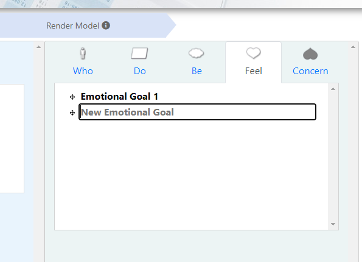
Click on ‘Be’ in the right pane to enter New Quality Goal:
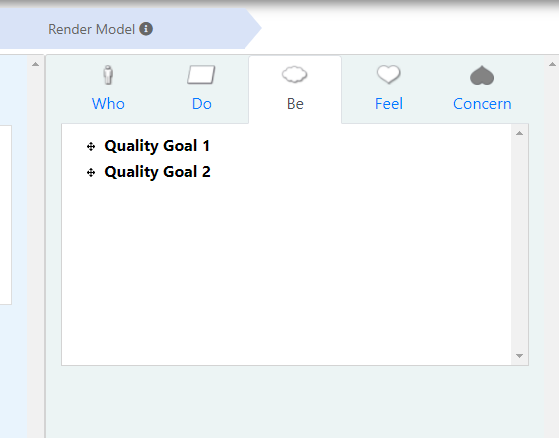
Similarly, click on ‘Feel’ to enter the emotional goals, ‘Concern’ to enter negative goals and ‘Who’ to enter the roles associated with the project.
To Delete the uploaded image: Click ‘X’ in the top-right corner of the uploaded image:
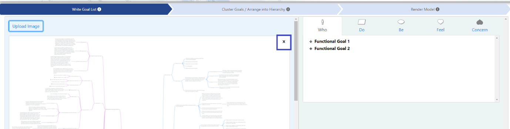
To Delete the entered goals: Place the cursor on the goal that needs to be deleted and click delete icon corresponding to the goal in the list:

To Rename the entered goals: Click on the corresponding goal in the list to get the cursor and rename the goal:
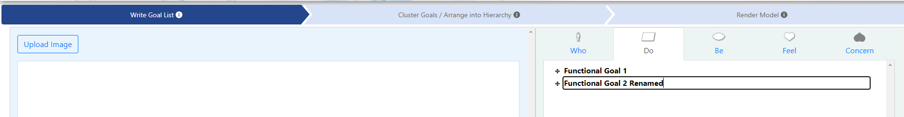
Step 2: Cluster Goals/Arrange into Hierarchy¶
Click on ‘Cluster Goals/Arrange into Hierarchy’ tab.
The lists created in the ‘Write Goal List’ tab are displayed on the left pane in the ‘Cluster Goals/Arrange into Hierarchy’ tab:

Select a goal to drag and drop into ‘Drag here to create a new cluster’ area of the tab:

When a goal is dropped in the ‘Drag here to create a new cluster’ area, it is by default placed at the bottom of the hierarchy. Click on the goal in the hierarchy and re-drag it to the required level.
Goals aligned in the same column will be on the same level in the rendered model in step 3.
To create a hierarchy,
Considering a model as a tree, the major goal of project is represented as a root node and is placed at the top of the hierarchy.
The high-level functional requirements (functional goals) of the project can be further divided into subtrees and are aligned right at one level under the root node.
Tip
Click on the goal and move the goal slightly to the right side. Once the goal is moved to the right position, a hyphen, -, will appear denoting the level of subtree.
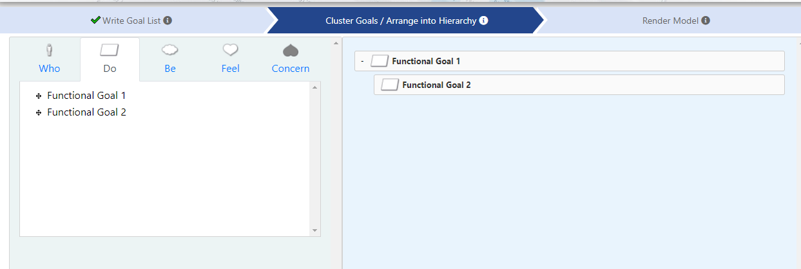
Activities related to each subtree are further extended to detail the associated goals and are right aligned at one level to the subtree.
Click on the goal and move the goal slightly to the right side. Once the goal is moved to the right position, a hyphen, -, will appear denoting the level of subtree.
The goals can be re-dragged to the upper level of the hierarchy by clicking on the goal and moving them to the left.
All the goals in the lists can be dragged and dropped at the required level in the **’**Drag here to create a new cluster’ area.
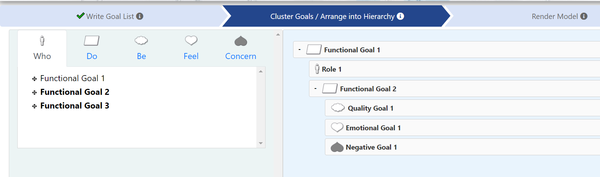
The goals in do/be/feel/concern/who lists can be edited in ‘Write Goal List’, ‘Cluster Goals/Arrange into Hierarchy’ and ‘Render Model’ tabs of MMTool.
Step 3: Render Model¶
Click on the ‘Render Model’ tab to render the model:
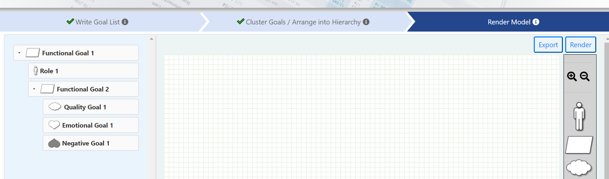
Click on ‘Render’ button in the top-right corner of ‘Render Model’ tab to render the motivational model from the hierarchy created in the Step 2.
The model rendered is:
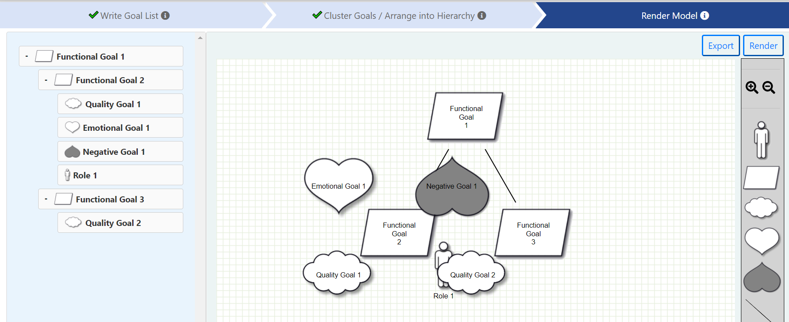
The shapes may overlap in the rendered model. Model needs to be adjusted manually to make it presentable and clear:

Click on ‘Save’ button present at the top to save the model:

Click on ‘Export’ button at the top-right corner to export the rendered model:

In the rendered model:
The notations (parallelogram, cloud, heart, and person) used in the model can be expandable and shrinkable.
The text in the notations is editable.
The position of the notations is adjustable.
Writing Notes¶
Click on ‘Notes’ button in the top-right corner of the model to write any information related to the team discussion as required:
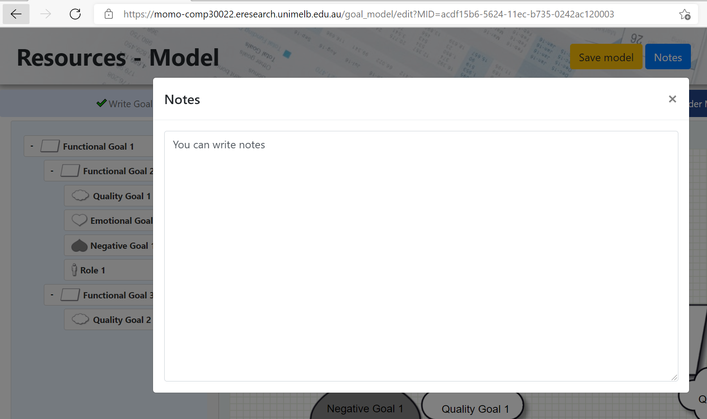
Returning to the Dashboard¶
Click on the ‘Return’ button in the top-right corner of the model to return to the dashboard at any point of time:
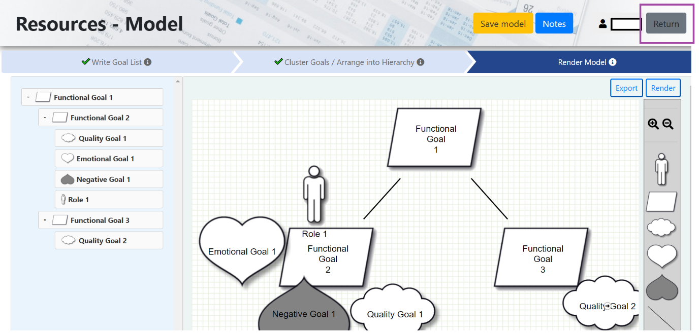
View Profile¶
Click on username present in the top-right corner:

Click on ‘Profile’ button to view your profile details:
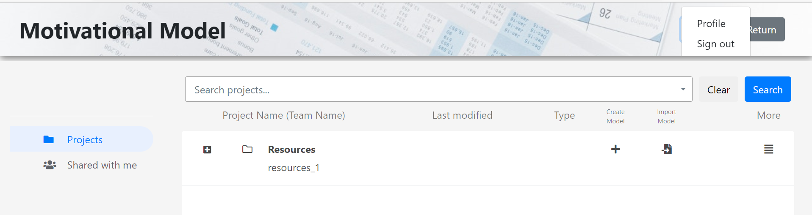
Signing Out¶
Click on username present in the top-right corner:
Click on ‘Sign out’ button to sign out from the tool: